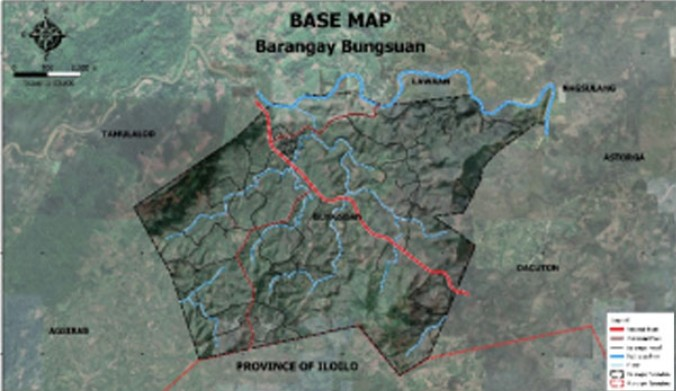

"Welcome to Barangay Bungsuan, Dumarao, Capiz! We are delighted to welcome you to our humble and vibrant community. Here in our barangay, we value unity, respect, and cooperation among our residents. Whether you are visiting or planning to stay, we hope you will feel the warmth, friendliness, and hospitality of our people. Together, let us build a peaceful, progressive, and harmonious community where everyone feels safe and at home."
Barangay Bungsuan is one of the peaceful and growing communities in the Municipality of Dumarao. Known for its warm and welcoming residents, the barangay reflects the true spirit of Bayanihan.
